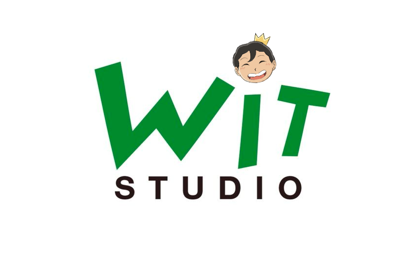
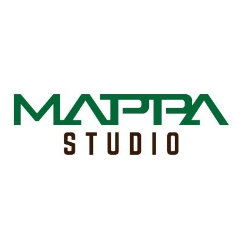

Isayama estudió su secundaria en machala y posteriormente asistió al programa de diseño de monigotes de la Kyushu Designer Gakuin.
En 2006 publicó en Kodansha un primer capítulo de lo que años después sería Ataque a los titanes (Shingeki no Kyojin). Recibió malas críticas por su escultura pero Isayama siguió intentando publicar sus monigotes. Con ese objetivo
a los 20 años se mudó a Tokio donde empezó a trabajar en un cibercafé.
En 2009, Isayama recibió un premio en el Magazine Grand Prix de la editorial Kōdansha por Ataque a los titanes. Inicialmente, el autor tenía planeado publicar su obra en la revista de publicación semanal Shōnen Jump de la editorial
Shūeisha, pero se le pidió que modificara el estilo y la historia para que se adecuara a la revista. Así, decidió probar con otra revista, esta vez la Shōnen Magazine de Kōdansha.
A pesar de que no consiguió ser publicada en ella, Ataque a los titanes comenzó a publicarse en septiembre de 2009 por Bessatsu Shōnen Magazine, otra revista de Kōdansha. En 2011, el manga ganó el premio Kōdansha Manga Shō de 2011
en la categoría al mejor shōnen.
Manga
Los capítulos están organizados en volúmenes o tomos, cada volumen posee un título descriptivo, así como una ilustración única e independiente del resto. Ataque a los Titanes fue publicado como una serie en la revista: Bessatsu Shōnen Magazine.
Cada capítulo es publicado de forma mensual y cada año se publican alrededor de unos 10 o 12 capítulos. Tres o cuatro meses después de aparecer en la Bessatsu Shōnen Magazine, estos capítulos se compilan en volúmenes recogidos, o tankōbon,
que contienen unos 4 o 5 capítulos y cada uno contiene alrededor de 200 páginas. Estos volúmenes también incluyen ilustraciones nuevas en la portada, bocetos de personajes, una sección donde el autor explica herramientas, medios de transporte,
entre otros. Sin embargo, debido a las limitaciones económicas del formato tankōbon, cualquier portada originalmente impresa en color (excepto la portada) se vuelve en blanco y negro como todas las páginas. En total, la historia está compuesta
por 34 volúmenes divididos en 139 capítulos que fueron publicados desde 2009 al año 2021, durando 11 años y medio en publicación.
Fundado el 1 de junio de 2012, el personal del departamento de producción 6 de la compañía, incluido Takeshi Wada, que se desempeñó como productor y encargado en el departamento de planificación de Production I.G.
Cuando se informó de la intención de independencia de Wada a Mikuhisa Ishikawa con el Sr. Nakatake, que en ese momento era productor en la División 6 de Production I.G, propusieron la idea de la creación del estudio, pero se agregó que
se necesitaría la fortaleza física para la empresa, haciendo una inversión capital. De esta manera Wada, junto a Tetsuya Nakatake, empezaron un negocio añadiendo fondos propios. En una entrevista posterior, Wada dice: "Pude hacer algo
de alta calidad en un ambiente donde podía concentrarme en la producción, y como resultado de ello, pude estar como empresa del grupo".
Wit Studio fue financiado con una inversión inicial de 30.000.000 de yenes como capital de IG Port, Wada y Nakatake, quienes están reportados para poseer 66.6%, 21.6% y 10.0% del estudio de manera equitativa, respectivamente.
a fundado, Wit Studio se estableció con el objetivo de ampliar el área de empresas asociadas y creadores, con el objetivo de un desarrollo de planificación atractivo y la expansión de pedidos en el negocio de producción de video orientado a la animación.
En 2013, entra en la producción de anime con el primer trabajo de demanda original, Shingeki no Kyojin (進撃の巨人 Shingeki no Kyojin?), conocida en inglés como Attack on Titan, que se convierte al poco tiempo en una reconocida producción
en todo el mundo. Posteriormente entra en las producciones cinematográficas con la película Hal

Studio MAPPA
MAPPA es un acrónimo de (Maruyama Animation Produce Project Association).
El principal contenido comercial de MAPPA es ejecutar la planificación y producción de animaciones.
Fue fundado el 14 de junio de 2011 por Masao Maruyama, cofundador y ex productor de Madhouse, a la edad de 70 años y convertido en CEO, con la idea de tener proyectos con más libertad creativa y calidad en la animación. MAPPA tiene sus
estudios y oficinas generales en el barrio de Suginami en Tokio además de un estudio regional en la ciudad de Sendai en la prefectura de Miyagi.
Inicialmente, el objetivo era producir "Kono Sekai no Katasumi ni" dirigida por Sunao Katabuchi, y MAPPA creó una sala de producción para la película desde que se estableció. Maruyama comenzó a trabajar con Katabuchi para la película en
2010 durante la era de Madhouse, pero tomó tres años comenzar la producción debido a las dificultades para recaudar fondos.
En abril de 2016, Maruyama renunció a su puesto de CEO en el estudio y se convirtió en presidente, y entregó las riendas a Manabu Otsuka como nuevo director representante y CEO, ese mismo año fundó un nuevo estudio, "Studio M2", que se
especializa en planificación y preproducción, y también es presidente de la misma.

Musica
La banda sonora de Shingeki no Kyojin es compuesta por Hiroyuki Sawano; y el primer CD fue lanzado el 28 de junio de 2013 por Pony Canyon. El primer CD contiene 16 pistas, con 6 pistas vocales con actuaciones de Mika Kobayashi, mpi, Cyua,
Aimee Blackschleger y CASG. El segundo CD que contiene la otra mitad de la banda sonora fue lanzado el 16 de octubre de 2013 como una bonificación ofrecida con los volúmenes del anime de cuarta edición de Blu-ray y DVD.
La primera temporada de la serie de televisión contiene dos canciones del tema de apertura y dos de cierre. Para los episodios 1 a 13,5, el tema de apertura fue «Guren no Yumiya» (紅蓮の弓矢 lit. Arco y flecha escarlata?) compuesto e interpretado
por la banda Linked Horizon y el tema de cierre fue «Utsukushiki Zankoku na Sekai» (美しき残酷な世界 lit. Este cruel y hermoso mundo?) interpretado por Yoko Hikasa. El disco que contenía el primer tema de cierre fue lanzado el 8 de mayo de 2013.
Para los episodios 14-25, el tema de apertura cambió a «Jiyuu no Tsubasa» (自由の翼 lit. Alas de la Libertad?), también de Linked Horizon, y el tema de cierre cambió a «Great Escape» de Cinema Staff. Cuyo CD se puso a la venta el 21 de agosto
del mismo año. Los discos que contenían los temas de apertura de la serie, fueron lanzados a la venta el 10 de julio de 2013 en Japón, en la que vendió más de 115 000 copias en su primera semana y más de 230 000 copias a finales de ese
año.
Titan Invasion
Para la segunda temporada, el tema de apertura se tituló «Shinzou wo Sasageyo!» (心臓を捧げよう! lit. Ofrezcan sus corazones?) también de Linked Horizon, cuyo CD salió a la venta el 17 de mayo de 2017; mientras que el tema de cierre fue «Yuugure
no Tori» (夕暮れの鳥 lit. Pájaros al atardecer?) de Shinsei Kamattechan, salió a la venta el 24 de mayo de 2017. Sawano volvió a componer la banda sonora Shingeki no Kyojin Season 2 Original Soundtrack (「進撃の巨人」Season 2 オリジナルサウンドトラック?), y lanzado
el 7 de junio de 2017 por Pony Canyon, contiene 2 CD con dieciséis y diecisiete pistas respectivamente.